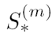
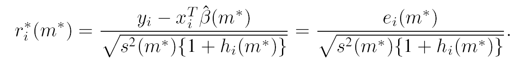
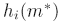
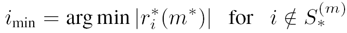
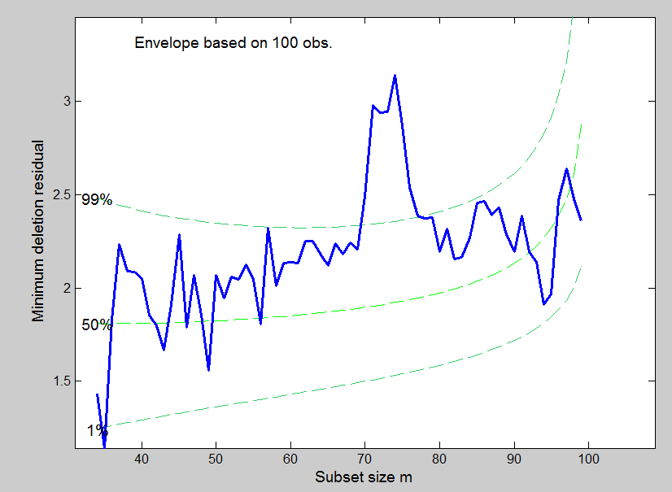
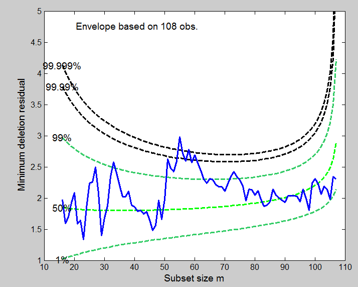

| Flexible Statistics Data Analysis Toolbox™ |
|
| Provide feedback on FSDA toolbox |
Plot of minimum deletion residual among the units which do not belong to the subset in each step of the forward search.
mdrplot(out)
mdrplot(out,param1,val1,param2,val2,...)
mdrplot(out) plots the trajectory of minimum deletion residual. At step m of the forward procedure the deletion residual are calculated for the n−m observations not in  as follows.

The notation  serves as a reminder that the leverage of each observation depends on . At the start of the search we have only p observations, each of which has leverage one . Let the observation nearest to those constituting be imin where.

the observation with the minimum absolute deletion residual among those not in . If observation imin is an outlier, so will be all other observations not in . To test whether observation imin is an outlier we use the absolute value of the minimum deletion residual

mdrplot(out) needs as input the following information
mdr − a matrix containing the monitoring of minimum deletion residual in each step of the forward search. The first column of mdr must contain the fwd search index
mdrplot(out,param1,val1,param2,val2,...) specifies one or more of the name/value pairs described in the following table.
| Parameter | Value |
|---|---|
| 'quant' |
Vector containing quantiles for which envelopes have to be computed. The default is to produce 1%, 50% and 99% envelopes. In other words the default is quant=[0.01;0.5;0.99]; |
| 'exact' |
Scalar, if it is equal to 1 the calculation of the quantiles of the T and F distribution is based on functions finv and tinv from the Matlab statistics toolbox, otherwise the calculations of the former quantiles is based on functions invcdff and invcdft. The solution has a tolerance of 1e-8 (change variable tol in files invcdff.m and invcdft.m if required. Remark: the use of functions tinv and finv is more precise but requires more time. The default value of exact is 0 (approximate solution). |
| 'sign' |
Scalar. If it is equal 1 (default) we distinguish steps for which minimum deletion residual was associated with positive or negative value of the residual. Steps associated with positive values of mdr are plotted in black, while other steps are plotted in red |
| 'mplus1' |
Scalar, which specifies if it is necessary to plot the curve associated with (m+1)th order statistic |
| 'envm' |
Scalar which specifies the size of the sample which is used to superimpose the envelope. The default is to add an envelope based on all the observations (size n envelope). |
| 'xlimx' |
Vector with two elements controlling minimum and maximum on the x axis. Default value is mdr(1,1)-3 and mdr(end,1)*1.1. |
| 'ylimy' |
Vector with two elements controlling minimum and maximum on the x axis. Default value is min(mdr(:,2)) and max(mdr(:,2))*1.1; |
| 'lwd' |
Scalar which controls line width of the curves which contain the mdr. Default value is width=2. |
| 'lwdenv' |
Scalar which controls the width of the lines associated with the envelopes. Default is lwdenv=1 |
| 'FontSize' |
Scalar which controls the font size of the labels of the axes. Default value is 12. |
| 'SizeAxesNum' |
Scalar which controls the size of the numbers of the axes. Default value is 10. |
| 'titl' |
A label for the title (default: '') |
| 'labx' |
A label for the x-axis (default: 'Subset size m') |
| 'laby' |
A label for the y-axis (default: 'Minimum deletion residual') |
| 'tag' |
String which identifies the handle of the plot which is about to be created. The default is to use tag 'pl_mdr'. Notice that if the program finds a plot which has a tag equal to the one specified by the user, then the output of the new plot overwrites the existing one in the same window else a new window is created |
| 'datatooltip' |
Empty value or structure. The default is datatooltip='' If datatooltip is not empty the user can use the mouse in order to have information about the unit selected, the step in which the unit enters the search and the associated label If datatooltip is a structure, it is possible to control the aspect of the data cursor (see function datacursormode for more details or the examples below). The default options of the structure are DisplayStyle='Window' and SnapToDataVertex='on' |
| 'label' | Cell containing the labels of the units (optional argument used when datatooltip=1. If this field is not present labels row1, ..., rown will be automatically created and included in the pop up datatooltip window) |
| 'databrush' |
The core of this option is selectdataFS, a function used by all graphic tools of the FSDA toolbox. A separate common page details all databrush options. |
| 'nameX' |
cell array of strings of length p containing the labels of the variables of the regression dataset. If it is empty (default) the sequence X1, ..., Xp will be created automatically.. |
| 'namey' | character containing the label of the response. |
| 'lwd' | Scalar which controls line width of the curve which contains the mdr. Default line width=2. |
| 'FontSize' | Scalar which controls the font size of the labels of the axes. Default value is 12. |
| 'SizeAxesNum' | Scalar which controls the size of the numbers of the axes. Default value is 10. |
| 'titl' | A label for the title (default: ''). |
| 'labx' | A label for the x-axis (default: 'Subset size m') |
| 'laby' | A label for the y-axis (default: 'Minimum deletion residual'). |
In this first example we use the same set of simulated data in web page resindexplot in order to compare the output which comes out from the mdrplot and that which derives from the plot of robust residuals.
n=100;
p=10;
state=1;
mtstream = RandStream('shr3cong','Seed',state);
RandStream.setDefaultStream(mtstream);
defaultStream = RandStream.getDefaultStream();
reset(defaultStream)
% Remark if you run this example with a version of MATLAB older than 7.9
% you have to comment the previous four lines and uncomment the following
% line
% randn('state', state);
X=randn(n,p);
y=randn(n,1);
y(1:30)=y(1:30)+5;
[out]=LXS(y,X);
[out]=FSReda(y,X,out.bs);
% The plot of minimum deletion residual shows a peak out of the envelope in
% the central part of the search
mdrplot(out)
The monitoring of the minimum deletion residual clearly shows that the sample is not homogeneous.
Clearly the peak out the 99% upper envelope during the central part of the search
shows that there is a subset of about 70 homogeneous units.
In this example we show the plot of minimum deletion for the hospital dataset. These data have been introduced by Neter et al. (1996, p. 334) and refer to the logged survival time of 54 patients undergoing liver surgery, together with four potential explanatory variables. On p. 437 another 54 observations are introduced to check the model fitted to the first 54. Their comparison suggests there is no systematic difference between the two sets.
load('hospital.txt');
y1=hospital(:,5);
X=hospital(:,1:4);
[out]=LXS(y1,X,'nsamp',10000,'lms',0);
[out1]=FSReda(y1,X,out.bs);
% The plot of minimum deletion residual shows a peak out of the envelope in
% the central part of the search
mdrplot(out1,'quant',[0.01 0.5 0.99 0.9999 0.99999],'ylimy',[1 5],'lwdenv',2,'xlimx',[10 110]);
The extreme value of the minimum deletion residual at the centre of the plot is caused by the entry of observations from one group followed by the entry of several observations from the other group. More in detail, the maximum value of the statistic is at m = 55. The units that enter after m = 57 nearly all come from the group of confirmatory observations, an indication that this second group of observations differs systematically from the original 54 units.
Also in this case it is possible to compare the output of the mdrplot with that which comes from the plot of robust residuals (see page resindexplot).
resindexplot, mmdplot, resfwdplot
| Provide feedback on FSDA toolbox |
|
|
mcd.html | minscale.html |
|